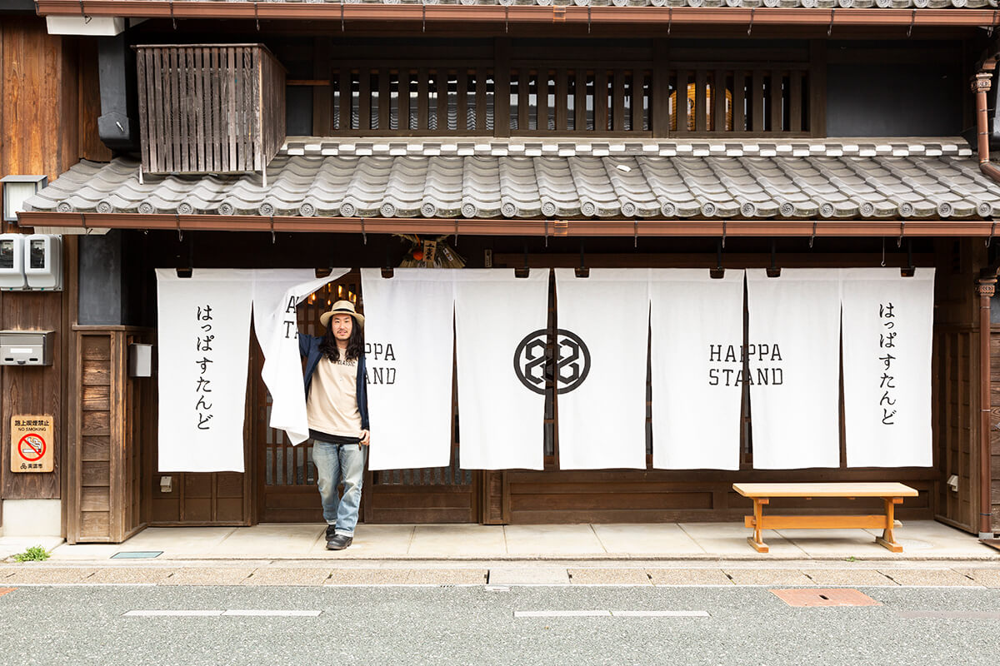
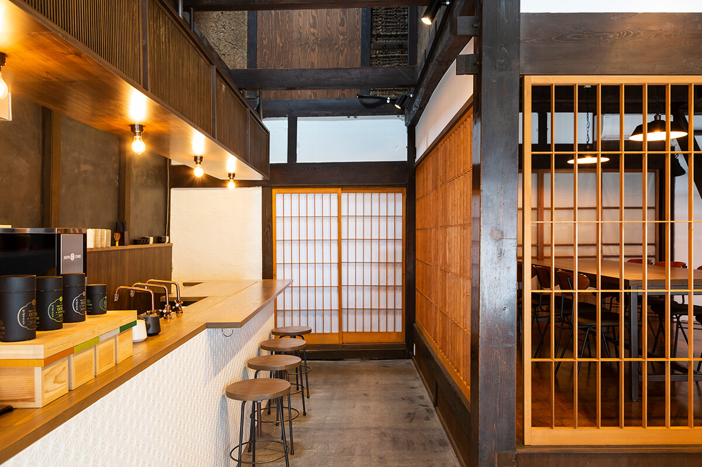
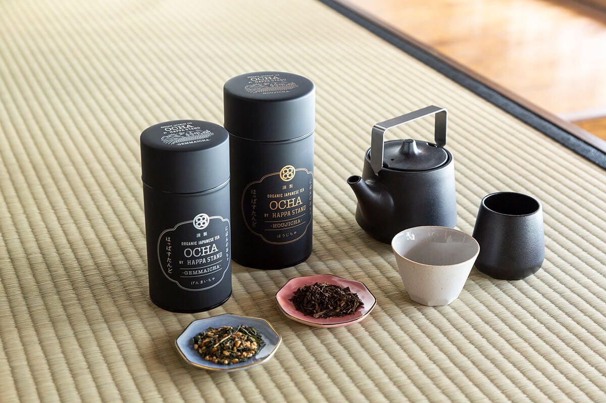
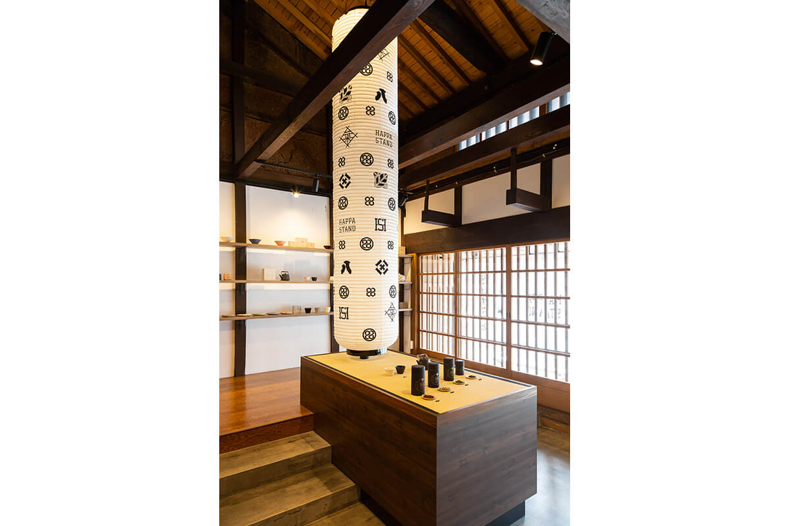
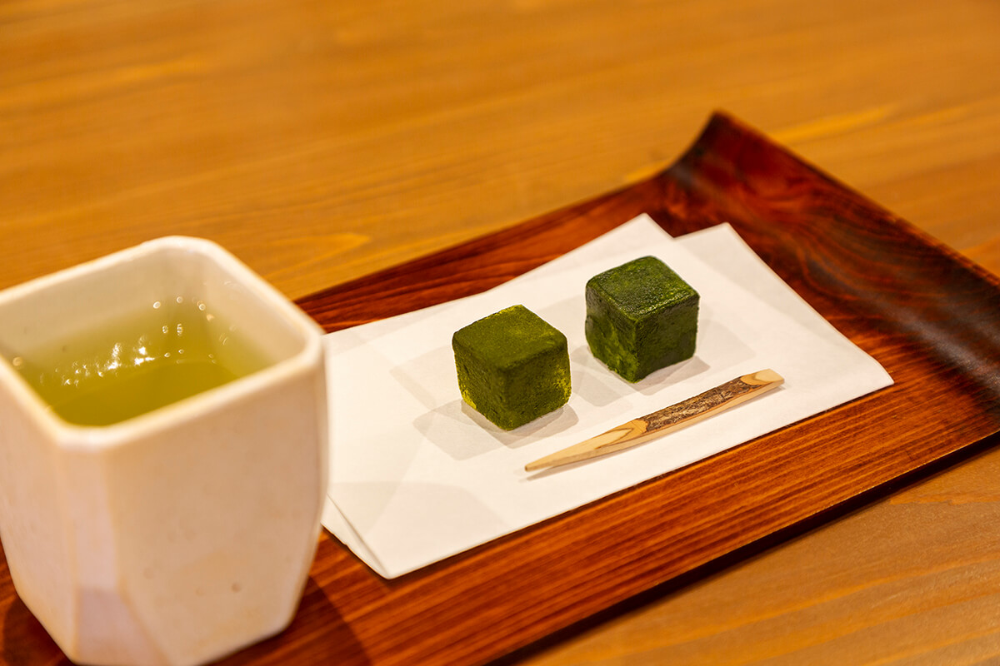

Префектура Гифу · Мино · чай
HAPPA STAND в Мино: органический японский чай на улице домов с удацу

Мино, город японской бумаги и керамики, сохранил целый квартал домов эпохи Эдо. В 2017 году в одном из них открылась чайная HAPPA STAND, где наливают органический японский чай.
Город
Улица, где поднимаются удацу
Мино в префектуре Гифу славится бумагой васи, которую делают здесь больше 1300 лет, и керамикой мино-яки. Старая часть города выглядит почти так же, как в эпоху Эдо: улицы со старыми домами охраняются государством как квартал традиционной застройки.
Квартал называют «улицей, где поднимаются удацу». Удацу это противопожарные стенки между домами, над которыми ставили маленькую крышу. Планировку города заложил Нагатика Канамори (1524–1608), военачальник, который правил этими землями на рубеже XVI и XVII веков.
Чайная
HAPPA STAND: чай как способ рассказать о Японии
HAPPA STAND открылась в августе 2017 года в отреставрированном старом доме. Внутри есть места за стойкой и за столами, и чай здесь только органический.

Основатель чайной окончил университет в Токио, поработал в компании, а в 24 года поехал в Америку. Там всё и началось.
«В Америке я видел „японскую“ еду, которая к Японии почти не имела отношения. И местные, и туристы ели её и хвалили. Тогда я понял: если японское не будут показывать сами японцы, его поймут неправильно»
основатель HAPPA STAND
За этим стояло желание сделать что-то для своей страны и правильно рассказать о её культуре. В 2015 году он открыл компанию органических продуктов и там познакомился с чаем, выращенным без химии.
Чай для HAPPA STAND привозят с органических плантаций Удзитавары в префектуре Киото. Фирменную посуду и фонари в зале делают мастера из Мино. Эмблема чайной похожа на семейный герб, а восьмёрка встречается в зале повсюду: в Японии это счастливое число, потому что иероглиф «восемь» расширяется книзу, как дорога к процветанию. Для хозяев она означает ещё и бесконечность.

«Мы говорим от имени японских производителей. Придумать дизайн и подать чай мы можем, а вырастить его нет. Наше дело донести до людей то, что вкладывают в работу те, кто чай делает»
основатель HAPPA STAND
Ко второй годовщине чайной, в 2019 году, основатель говорил о своей цели спокойно: он хочет, чтобы органический японский чай стал обычной частью повседневной жизни.
«Наш девиз „NOT OLD, BE CLASSIC.“ («не старое, а классическое») значит, что классику нужно обновлять. Вещь должна быть изящной и пережить своё время. Мы хотим дать людям повод узнать Японию и её традиции, поэтому и открылись именно здесь, на старой улице Мино. Дальше хотим поддерживать страну не только чаем, но и всей её богатой кухней»
основатель HAPPA STAND

Меню
Посидеть в зале или взять с собой
Чай можно выпить в зале не спеша, а можно взять стакан с собой и гулять по кварталу удацу. Листья выращены без пестицидов, поэтому такой чай мягок для организма.

HAPPA STAND
- Адрес
- префектура Гифу, Мино, Токива-тё, 2300
- Телефон
- +81 575-46-8859
- Часы работы
- 8:00–17:00
- Выходные
- среда, четверг
- Сайт
- happastand.jp
Фото: Манами Такахаси.